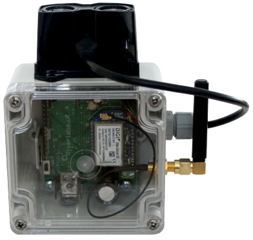

Guía de inicio rápido¤
Introducción¤
Si tiene un registrador Riverlabs preprogramado, estará listo para usar sin necesidad de configuración o programación. Sin embargo, si necesita cambiar algún aspecto de la configuración, tendrá que volver a programarlo. Por ejemplo, uno de los ajustes más habituales es la frecuencia de medición. Nuestros registradores preprogramados miden cada 5 o 15 minutos. Esto resulta adecuado para muchos casos, aunque quizá se prefiere un intervalo más corto o más largo.
Si se utiliza telemetría, pero no la plataforma de datos de Riverlabs, hay que volver a programar el registrador para configurar, por ejemplo, la dirección de internet de la plataforma de datos y las credenciales de autenticación del dispositivo.
También puede ser necesario volver a programar el registrador si el reloj ha perdido la hora por haberse retirado o agotado la pila de botón de respaldo. THay que tener en cuenta que los registradores con conexión celular ajustan la hora automáticamente consultando un servidor horario de internet, por lo que no necesitan configuración manual. Sin embargo, para los registradores que utilizan tarjeta SD es fundamental ajustar la hora correcta mediante un programa de Arduino.
Aunque la programación de un registrador de datos pueda parecer complicado, el manual de programación le guía durante todo el proceso. Además, hemos organizado el código para que los ajustes más habituales estén al principio del programa principal y puedas modificarlos sin alterar el resto. Si ya conoces Arduino, la guía breve ayudará a empezar.
Esta guía de inicio rápido presupone que el registrador está programado correctamente.
1. Identifica tu registrador¤
Primero, identifica su modelo de registrador. Hemos producido numerosas versiones desde que comenzó el desarrollo, pero en los últimos años hemos consolidado el diseño en torno a nuestra plataforma Rio, que es bastante estable. En el futuro, esperamos incorporar las diferencias de hardware al software para poder utilizar una única base de código.
La principal diferencia entre modelos es el sensor conectado. Utilizamos sobre todo sensores de distancia para medir el nivel del agua, como el sensor ultrasónico Maxbotix y el telémetro lidar de Garmin. A continuación se comparan ambos sensores. Más recientemente, también hemos desarrollado modelos para sensores de humedad del suelo, pluviómetros y determinados parámetros de calidad del agua.
Otra diferencia importante es la gestión de los datos. Nuestros registradores permiten almacenar los datos localmente en una tarjeta SD o transmitirlos por telemetría. Aunque sería ideal poder hacer ambas cosas, el procesador que utilizamos no tiene suficiente memoria interna para alojar el software de las dos funciones. Esperamos pasar a una arquitectura más moderna que lo permita. Mientras tanto, tendrás que elegir una de las dos opciones.
-
Registrador ultrasónico Wari

Figure 1: Registrador Wari Sensor: Maxbotix MB7389
Alcance: 0.3 m–5 m
Resolución: 1 mm
Ángulo del haz: Amplio (~15°)
Adecuado para:- Control del nivel del agua
- Aplicaciones de corto alcance
- Instalaciones en posición vertical
-
Registrador lidar Wari

Figure 2: Registrador lidar Sensor: Garmin Lidarlite v3HP
Alcance: 0.05 m–35 m
Resolución: 1 cm
Ángulo del haz: Muy estrecho (~0.5°)
Adecuado para:- Mediciones de largo alcance
- Situaciones en las que se acepta una precisión menor que la del ultrasonido (1 - 10 cm)
- Instalaciones difíciles (permite ángulos de hasta 40° respecto a la vertical)

2. Baterías¤
Los registradores Wari utilizan dos baterías: una batería grande de ion-litio que proporciona la alimentación principal y una pequeña pila de botón situada detrás de la placa de circuito. La pila de botón suele venir instalada y no debe retirarse, ya que el reloj perdería la hora.
Según el modelo de registrador, la batería principal es del tamaño 18650 o del tamaño más pequeño 14500 (consulta la guía de baterías y alimentación). Ten en cuenta que la 14500 tiene un tamaño muy parecido al de una pila AA. Sin embargo, una pila AA convencional no sirve porque solo proporciona 1.5V. El registrador funciona a 3.3V y necesita una batería de litio.
¡Comprueba bien la polaridad!
Verifica dos veces la orientación de la batería antes de introducirla. Haz coincidir las marcas + y - de la batería con las del compartimento. Una batería insertada al revés puede dañar el registrador.
Batería principal (normalmente de tamaño 18650 o 14500):
- Apaga la placa
- Comprueba que tienes la batería adecuada
- Verifica la polaridad (+/-) y el nivel de carga
- Introduce la batería y asegúrate de que las pinzas metálicas la toquen. Si no hay contacto, saca la batería y dobla las pinzas ligeramente hacia dentro con cuidado.
Pila del RTC (CR1220):
Conservación de la fecha
Es posible que la pila de botón ya esté instalada; normalmente dura varios años. Si necesitas sustituirla, deja puesta la batería principal para alimentar el reloj y conservar la hora. Si el reloj se ha reiniciado, tendrás que ajustarlo de nuevo con el programa de Arduino correspondiente.
- Apaga la placa
- Desatornilla la placa de circuito y localiza el pequeño alojamiento de la pila de botón en la parte posterior
- Introduce la pila CR1220 (normalmente con el lado + hacia arriba)
- Presiona firmemente hasta que encaje
- Si corresponde, vuelve a atornillar la placa de circuito a la carcasa
Para más detalles sobre las opciones de batería y su funcionamiento, consulta la guía de baterías y alimentación
3. Uso de la tarjeta SD¤
Si el registrador está programado para guardar datos en la tarjeta SD, debes introducir una tarjeta microSD en la ranura. Según el modelo, los contactos de la tarjeta deben mirar hacia fuera o hacia dentro. Consulta las fotografías para ver la orientación correspondiente.
Al encender o reiniciar el registrador, el código buscará una tarjeta SD. Si no encuentra ninguna, el LED rojo parpadeará 3 x 3 veces. En ese caso, comprueba que la tarjeta esté bien insertada. Si el LED se enciende una sola vez, la tarjeta se ha detectado y está lista para utilizarse.
Almacenamiento temporal antes de escribir en la tarjeta SD
Para ahorrar energía y reducir el desgaste de la tarjeta SD, los nuevos datos no se escriben en ella inmediatamente. Primero se guardan en un chip de memoria EEPROM interno y se escriben en la tarjeta a intervalos regulares (normalmente una vez al día). Por ello, si retiras la tarjeta SD para leerla, pueden faltar hasta 24h de datos. Para evitarlo, pulsa el botón de reinicio antes de sacar la tarjeta SD. Al encenderse o reiniciarse, el registrador buscará datos pendientes en el chip de memoria y los volcará en la tarjeta SD. El LED permanecerá encendido durante la escritura, que puede durar hasta 20 segundos.
No retires la tarjeta SD mientras se escriben los datos
No saques la tarjeta SD mientras el LED esté encendido y la escritura siga en curso. Podrías perder datos y dañar la tarjeta SD. Espera a que se apague el LED rojo.
Para más detalles sobre la lectura de datos y los formatos de archivo, consulta la guía de descarga de datos
4. Telemetría¤
Como alternativa, los datos pueden enviarse mediante telemetría. Actualmente nuestros registradores admiten dos tecnologías: LoRa/LoRaWAN y transmisión celular. Puede que necesites componentes adicionales. Para LoRaWAN, la placa debe tener soldado un módulo de radio adecuado. La conectividad celular utiliza un módem DIGI independiente que se puede insertar en la ranura correspondiente (si se han soldado los conectores de pines). Ambas tecnologías requieren también una antena adecuada. La telemetría celular consume bastante energía, por lo que normalmente necesitarás un panel solar; de lo contrario, la batería se descargará muy rápido.
LoRa/LoRaWAN¤
Para utilizar LoRa/LoRaWAN, carga el programa de Arduino correcto (consulta el manual de programación). Si el registrador viene preconfigurado para LoRaWAN, deberías haber recibido el DevEUI del dispositivo. Puedes utilizarlo para registrar el dispositivo en una aplicación LoRaWAN como The Things Network. En ese caso, no hace falta programarlo de nuevo.
Conectividad celular¤
La conectividad celular necesita un módem, como el Digi XBee 3 Global LTE Cat 1, y una tarjeta SIM. Si utilizas la plataforma de gestión de datos de Imperial, es posible que el registrador ya esté preconfigurado. En caso contrario, tendrás que volver a programarlo para establecer la dirección de internet de la plataforma de datos, las credenciales del registrador, el APN de la tarjeta SIM y otros detalles del proceso de conexión. Todo ello se explica en la guía de telemetría.
Frecuencia de telemetría
El programa LoRaWAN enviará datos en cada medición. En cambio, para ahorrar batería, el programa celular almacenará los datos internamente y solo los enviará a determinados intervalos. Normalmente, nuestros registradores están programados para medir cada 5 minutos y transmitir los datos cada hora. Puedes ajustar otras frecuencias en el programa de Arduino, pero ten en cuenta que las transmisiones muy frecuentes pueden requerir un panel solar más grande.
5. Prueba antes de la instalación¤
Antes de llevar el registrador al campo, conviene probarlo en una mesa de trabajo:
- Sensor reconectado (conector de 3 pines de Maxbotix enchufado)
- Interruptor de alimentación en posición ON
- Verificar que el LED parpadee durante las mediciones
- Comprobar que los datos se escriban en la tarjeta SD o se envíen por telemetría
- Confirmar que las lecturas del sensor sean razonables
- Probarlo durante al menos 30 minutos para confirmar su funcionamiento estable
Consulta la lista de verificación previa a la primera instalación para realizar una prueba completa antes del despliegue.
¿Listo para instalarlo?
Una vez completados estos pasos y verificado su funcionamiento, el registrador estará listo para instalarse en el campo. Recuerda documentar la ubicación de instalación y tomar fotografías para futuras consultas.
6. Instalación en el campo¤
¡Tu registrador ya está listo para instalarse en el campo! Consulta la guía de montaje para ver instrucciones detalladas sobre:
- Montaje del sensor
- Posición y orientación del sensor
- Consideraciones ambientales
7. Recursos útiles¤
- Lista de verificación previa a la primera instalación
- Manual de instalación
- Configura tu propia plataforma de telemetría
- Características de las baterías y la alimentación
8. ¿Necesitas ayuda?¤
- Consulta problemas comunes y soluciones para encontrar soluciones rápidas
- Revisa los diagramas de diagnóstico para identificar problemas de forma sistemática
- Contacta con el servicio de asistencia: info@riverlabs.uk